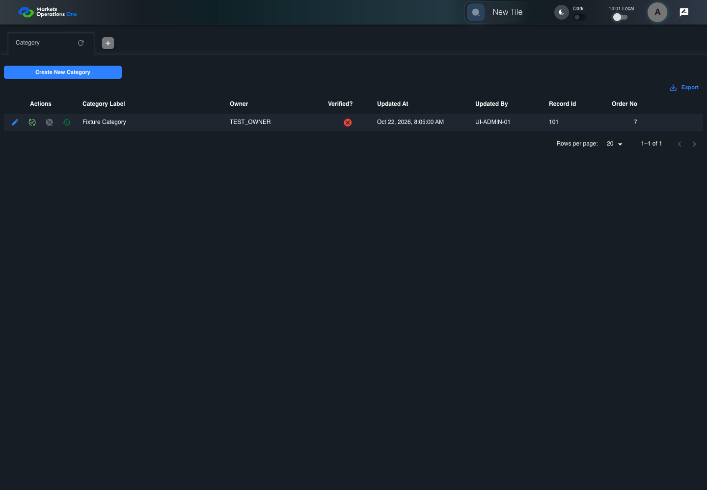

UI-ADM-GRD-009 actual administration UI with step evidence
PASS · application/run-050/ui-adm-grd-009-actual-administration-ui-with-step-evidence-06e762770821-attempt-1 · ACTUAL_APPLICATION_LOCAL_SERVICES
Actual current React administration screens. Controlled browser login supplies UI-ADMIN-01 and TEST_OWNER, or the declared SUPER_USER. Controlled BFF routes return the case-declared records. Other controlled saves persist submitted field values. This run establishes frontend handling only. It does not execute BFF validation, storage, audit generation, or authorization.
2026-10-22T06:01:25.868Z to 2026-10-22T06:01:29.574Z
Assertions and result · Artifact manifest · Exact run inputs and source hashes
Result SHA-256:43f329f14f3fc952cd2fceef4a7ed1867695b2f3dca9bd147e97d55e1b0a3c1eMachine observations
- ui-origin-admin-requests.json
40d41745cd647bd3a6b7b62264164365523e192a29abf05696a261c421e234ee
Screenshot capture: CAPTURED. Named frames: 7.
Step screenshot evidence: COMPLETE. 6/6 canonical steps have execution screenshots.
Canonical step timeline
Given Admin A is authenticated as fixture UI-ADMIN-01 with the case-specific permissions
Execution: PASSED.
1. step-01 Visible state after step 1: Given Admin A is authenticated as fixture UI-ADMIN-01 with the case-specific permissions
2026-10-22T06:01:27.147Z · 1440×1000
Step: /Users/lushevol/code/github/ratan-release-impact/workbench/tasks/ui-test-coverage-20261022/test-cases.md:10106
SHA-256:e2fecea69f4b5e4c51bcbaa02ec757835da891f94c1c5ab30ccdcdea7ec7548fAnd browser timezone is Asia/Singapore; record updatedAt is 2026-10-22T00:05:00Z and clock mode is UTC
Execution: PASSED.
2. step-02 Visible state after step 2: And browser timezone is Asia/Singapore; record updatedAt is 2026-10-22T00:05:00Z and clock mode is UTC
2026-10-22T06:01:28.208Z · 1440×1000
Step: /Users/lushevol/code/github/ratan-release-impact/workbench/tasks/ui-test-coverage-20261022/test-cases.md:10107
SHA-256:173b4aa2c01cb7d7c1ac4e5eb9fb754deeac179d42a7a29fa4c3818d530dbdb9When Admin A clicks switch named "Time Switch" inside the shell application bar
Execution: PASSED.
3. step-03 Visible state after step 3: When Admin A clicks switch named "Time Switch" inside the shell application bar
2026-10-22T06:01:28.467Z · 1440×1000
Step: /Users/lushevol/code/github/ratan-release-impact/workbench/tasks/ui-test-coverage-20261022/test-cases.md:10108
SHA-256:f58f5b868c2f5a855c69df97015b7c7973b6809b72705ea513eb4ba857ff8ec1Then switch named "Time Switch" inside the shell application bar is not checked
Execution: PASSED.
4. step-04 Visible state after step 4: Then switch named "Time Switch" inside the shell application bar is not checked
2026-10-22T06:01:28.562Z · 1440×1000
Step: /Users/lushevol/code/github/ratan-release-impact/workbench/tasks/ui-test-coverage-20261022/test-cases.md:10109
SHA-256:f58f5b868c2f5a855c69df97015b7c7973b6809b72705ea513eb4ba857ff8ec1And cell named "Updated At" inside row with Record Id "101" in the "Category" administration data grid represents date "2026-10-22" and time "08:05:00" in Asia/Singapore
Execution: PASSED.
5. step-05 Visible state after step 5: And cell named "Updated At" inside row with Record Id "101" in the "Category" administration data grid represents date "2026-10-22" and time "08:05:00" in Asia/Singapore
2026-10-22T06:01:28.709Z · 1440×1000
Step: /Users/lushevol/code/github/ratan-release-impact/workbench/tasks/ui-test-coverage-20261022/test-cases.md:10110
SHA-256:f58f5b868c2f5a855c69df97015b7c7973b6809b72705ea513eb4ba857ff8ec1And cell named "Updated At" inside row with Record Id "101" in the "Category" administration data grid equals the declared en-locale medium-date and medium-time display for that instant
Execution: PASSED.
6. step-06 Visible state after step 6: And cell named "Updated At" inside row with Record Id "101" in the "Category" administration data grid equals the declared en-locale medium-date and medium-time display for that instant
2026-10-22T06:01:28.872Z · 1440×1000
Step: /Users/lushevol/code/github/ratan-release-impact/workbench/tasks/ui-test-coverage-20261022/test-cases.md:10111
SHA-256:f58f5b868c2f5a855c69df97015b7c7973b6809b72705ea513eb4ba857ff8ec1
Additional named frames

The final visible state after the named test assertions.
2026-10-22T06:01:29.003Z · 1440×1000Step: Test source: /Users/lushevol/code/github/ratan-release-impact/workbench/e2e/audit-specs/admin-expanded.spec.ts:15
SHA-256:
f58f5b868c2f5a855c69df97015b7c7973b6809b72705ea513eb4ba857ff8ec1Screenshots establish visible state only. Assertions and traces support functional claims.